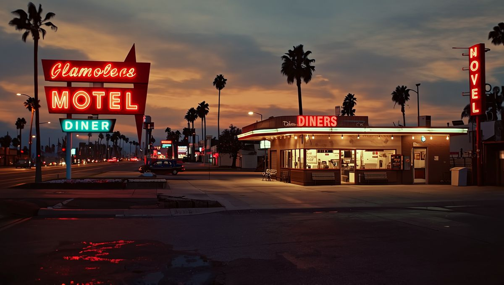

Series / 004
Summer Night

Summer Night carries warm air through the network.
Soft lights, distant streets, and cyberpunk ambience with a more human temperature.
Made for driving, resting, and drifting under an electric sky.
TRANSMISSION PROFILE
- Night driving
- Resting
- Drifting
- Warm ambience